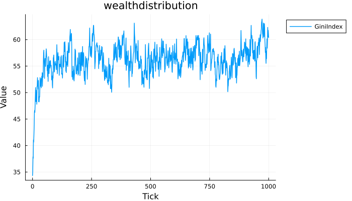

Wealth Distribution
Overview
WHAT IS IT?
This model simulates the distribution of wealth. “The rich get richer and the poor get poorer” is a familiar saying that expresses inequity in the distribution of wealth. In this simulation, we see Pareto’s law, in which there are a large number of “poor” or red people, fewer “middle class” or green people, and many fewer “rich” or blue people.
HOW IT WORKS
This model is adapted from Epstein & Axtell’s “Sugarscape” model. It uses grain instead of sugar. Each patch has an amount of grain and a grain capacity (the amount of grain it can grow). People collect grain from the patches, and eat the grain to survive. How much grain each person accumulates is his or her wealth.
The model begins with a roughly equal wealth distribution. The people then wander around the landscape gathering as much grain as they can. Each person attempts to move in the direction where the most grain lies. Each time tick, each person eats a certain amount of grain. This amount is called their metabolism. People also have a life expectancy. When their lifespan runs out, or they run out of grain, they die and produce a single offspring. The offspring has a random metabolism and a random amount of grain, ranging from the poorest person’s amount of grain to the richest person’s amount of grain. (There is no inheritance of wealth.)
To observe the equity (or the inequity) of the distribution of wealth, a graphical tool called the Lorenz curve is utilized. We rank the population by their wealth and then plot the percentage of the population that owns each percentage of the wealth (e.g. 30% of the wealth is owned by 50% of the population). Hence the ranges on both axes are from 0% to 100%.
Another way to understand the Lorenz curve is to imagine a society of 100 people with a fixed amount of wealth available. Each individual is 1% of the population. Rank the individuals in order of their wealth from greatest to least: the poorest individual would have the lowest ranking of 1 and so forth. Then plot the proportion of the rank of an individual on the y-axis and the portion of wealth owned by this particular individual and all the individuals with lower rankings on the x-axis. For example, individual Y with a ranking of 20 (20th poorest in society) would have a percentage ranking of 20% in a society of 100 people (or 100 rankings) — this is the point on the y-axis. The corresponding plot on the x-axis is the proportion of the wealth that this individual with ranking 20 owns along with the wealth owned by all the individuals with lower rankings (from rankings 1 to 19). A straight line with a 45 degree incline at the origin (or slope of 1) is a Lorenz curve that represents perfect equality — everyone holds an equal part of the available wealth. On the other hand, should only one family or one individual hold all of the wealth in the population (i.e. perfect inequity), then the Lorenz curve will be a backwards “L” where 100% of the wealth is owned by the last percentage proportion of the population. In practice, the Lorenz curve actually falls somewhere between the straight 45 degree line and the backwards “L”.
For a numerical measurement of the inequity in the distribution of wealth, the Gini index (or Gini coefficient) is derived from the Lorenz curve. To calculate the Gini index, find the area between the 45 degree line of perfect equality and the Lorenz curve. Divide this quantity by the total area under the 45 degree line of perfect equality (this number is always 0.5 — the area of 45-45-90 triangle with sides of length 1). If the Lorenz curve is the 45 degree line then the Gini index would be 0; there is no area between the Lorenz curve and the 45 degree line. If, however, the Lorenz curve is a backwards “L”, then the Gini-Index would be 1 — the area between the Lorenz curve and the 45 degree line is 0.5; this quantity divided by 0.5 is 1. Hence, equality in the distribution of wealth is measured on a scale of 0 to 1 — more inequity as one travels up the scale. Another way to understand (and equivalently compute) the Gini index, without reference to the Lorenz curve, is to think of it as the mean difference in wealth between all possible pairs of people in the population, expressed as a proportion of the average wealth (see Deltas, 2003 for more).
THINGS TO NOTICE
Notice the distribution of wealth. Are the classes equal?
This model usually demonstrates Pareto’s Law, in which most of the people are poor, fewer are middle class, and very few are rich. Why does this happen?
Do poor families seem to stay poor? What about the rich and the middle class people?
Watch the CLASS PLOT to see how long it takes for the classes to reach stable values.
As time passes, does the distribution get more equalized or more skewed? (Hint: observe the Gini index plot.)
Try to find resources from the U.S. Government Census Bureau for the U.S.’s Gini coefficient. Are the Gini coefficients that you calculate from the model comparable to those of the Census Bureau? Why or why not?
Is there a trend in the plotting of the Gini index with respect to time? Does the plot oscillate? Or does it stabilize to a certain number?
THINGS TO TRY
Are there any settings that do not result in a demonstration of Pareto’s Law?
Play with the NUM-GRAIN-GROWN slider, and see how this affects the distribution of wealth.
How much does the LIFE-EXPECTANCY-MAX matter?
Change the value of the MAX-GRAIN variable (in the setup procedure in the Code tab). Do outcomes differ?
Experiment with the PERCENT-BEST-LAND and NUM-PEOPLE sliders. How do these affect the outcome of the distribution of wealth?
Try having all the people start in one location. See what happens.
Try setting everyone’s initial wealth as being equal. Does the initial endowment of an individual still arrive at an unequal distribution in wealth? Is it less so when setting random initial wealth for each individual?
Try setting all the individual’s wealth and vision to being equal. Do you still arrive at an unequal distribution of wealth? Is it more equal in the measure of the Gini index than with random endowments of vision?
EXTENDING THE MODEL
Have each newborn inherit a percentage of the wealth of its parent.
Add a switch or slider which has the patches grow back all or a percentage of their grain capacity, rather than just one unit of grain.
Allow the grain to give an advantage or disadvantage to its carrier, such as every time some grain is eaten or harvested, pollution is created.
Would this model be the same if the wealth were randomly distributed (as opposed to a gradient)? Try different landscapes, making SETUP buttons for each new landscape.
Try allowing metabolism or vision or another characteristic to be inherited. Will we see any sort of evolution? Will the “fittest” survive? If not, why not?
We said above that “there is no inheritance of wealth” in the model, but that is not entirely true. New turtles are born in the same location as their parents. If grain is plentiful relative to the population at this location, they inherit a good starting situation. Try moving the turtles to a random patch when they are born. Does that lead to a more equitable distribution of wealth?
Try adding in seasons into the model. That is to say have the grain grow better in a section of the landscape during certain times and worse at others.
How could you change the model to achieve wealth equality?
The way the procedures are set up now, one person will sometimes follow another. You can see this by setting the number of people relatively low, such as 50 or 100, and having a long life expectancy. Why does this phenomenon happen? Try adding code to prevent this from occurring. (Hint: When and how do people check to see which direction they should move in?)
NETLOGO FEATURES
Examine how the landscape of color is created — note the use of the scale-color reporter. Each patch is given a value, and scale-color reports a color for each patch that is scaled according to its value.
Note the use of lists in drawing the Lorenz Curve and computing the Gini index.
CREDITS AND REFERENCES
This model is based on a model described in Epstein, J. & Axtell R. (1996). Growing Artificial Societies: Social Science from the Bottom Up. Washington, DC: Brookings Institution Press.
For an explanation of Pareto’s Law, see https://en.wikipedia.org/wiki/Pareto_principle.
For more on the calculation of the Gini index see:
- Deltas, George (2003). The Small-Sample Bias of the Gini Coefficient: Results and Implications for Empirical Research. The Review of Economics and Statistics, February 2003, 85(1): 226-234.
In particular, note that if one is calculating the Gini index of a sample for the purpose of estimating the value for a larger population, a small correction factor to the method used here may be needed for small samples.
HOW TO CITE
If you mention this model or the NetLogo software in a publication, we ask that you include the citations below.
For the model itself:
- Wilensky, U. (1998). NetLogo Wealth Distribution model. http://ccl.northwestern.edu/netlogo/models/WealthDistribution. Center for Connected Learning and Computer-Based Modeling, Northwestern University, Evanston, IL.
Please cite the NetLogo software as:
- Wilensky, U. (1999). NetLogo. http://ccl.northwestern.edu/netlogo/. Center for Connected Learning and Computer-Based Modeling, Northwestern University, Evanston, IL.
COPYRIGHT AND LICENSE
Copyright 1998 Uri Wilensky.

This model is licensed under the Creative Commons Attribution-NonCommercial-ShareAlike 3.0 License. To view a copy of this license, visit https://creativecommons.org/licenses/by-nc-sa/3.0/ or send a letter to Creative Commons, 559 Nathan Abbott Way, Stanford, California 94305, USA.
NetLogo itself is free software for non-commercial use under the terms of the GNU General Public License (see full license information here).
To inquire about commercial licenses for either NetLogo or specific models from the models library, please contact netlogo-commercial-admin@ccl.northwestern.edu.
This model was created as part of the project: CONNECTED MATHEMATICS: MAKING SENSE OF COMPLEX PHENOMENA THROUGH BUILDING OBJECT-BASED PARALLEL MODELS (OBPML). The project gratefully acknowledges the support of the National Science Foundation (Applications of Advanced Technologies Program) – grant numbers RED #9552950 and REC #9632612.
This model was converted to NetLogo as part of the projects: PARTICIPATORY SIMULATIONS: NETWORK-BASED DESIGN FOR SYSTEMS LEARNING IN CLASSROOMS and/or INTEGRATED SIMULATION AND MODELING ENVIRONMENT. The project gratefully acknowledges the support of the National Science Foundation (REPP & ROLE programs) – grant numbers REC #9814682 and REC-0126227. Converted from StarLogoT to NetLogo, 2001.
Parameters
| Parameter | Type | Default | Description |
|---|---|---|---|
grid_width | Int | 31 | -15..15 → 31 |
grid_height | Int | 31 | grid height |
grain_growth_interval | Int | 1 | grain growth interval |
life_expectancy_max | Int | 83 | life expectancy max |
life_expectancy_min | Int | 1 | life expectancy min |
max_vision | Int | 5 | max vision |
metabolism_max | Int | 15 | metabolism max |
num_grain_grown | Int | 4 | num grain grown |
num_people | Int | 250 | num people |
percent_best_land | Float64 | 10.0 | percent best land |
max_grain | Int | 50 | max grain |
max_ticks | Int | 1000 | max ticks |
Source Code
The Julia code to run this model:
using ArkModelZoo
_, trajectory = run_wealthdistribution()Time Series

Ensemble Runs
Ten replicates with different random seeds, showing mean ± standard deviation.

Parameter Sensitivity
Varying grain_growth_interval.

Appendix: Source Code
This model is implemented in the Ark.jl Entity-Component-System (ECS) framework. The code is split into five files, each with a distinct role:
- Parameters: a mutable struct holding all configurable values.
- Components: lightweight data types attached to individual entities (agents).
- Resources: world-level shared state accessible to all systems.
- Systems: functions that operate on entities each tick, defining model behavior.
- Model: wiring that assembles the world, registers resources and systems, and provides the run entry point.
Parameters (parameters.jl)
The parameter struct uses @kwdef so that every field has a default value and can be overridden by keyword. These defaults match the original NetLogo model’s slider settings.
Base.@kwdef mutable struct WDParams
grid_width::Int = 31 # -15..15 → 31
grid_height::Int = 31
grain_growth_interval::Int = 1
life_expectancy_max::Int = 83
life_expectancy_min::Int = 1
max_vision::Int = 5
metabolism_max::Int = 15
num_grain_grown::Int = 4
num_people::Int = 250
percent_best_land::Float64 = 10.0
max_grain::Int = 50
max_ticks::Int = 1000
seed::Int = 42
endComponents (components.jl)
Components are lightweight data types attached to individual entities (agents). Mutable structs hold per-entity state, while empty tag structs act as markers for the ECS query system to efficiently filter entities.
# Grid position (integer coords, 1-based)
mutable struct WDPosition
x::Int
y::Int
end
WDPosition() = WDPosition(1, 1)
# Heading: 0=North, 90=East, 180=South, 270=West
mutable struct WDHeading
heading::Int
end
WDHeading() = WDHeading(0)
mutable struct WDTurtle
age::Int
wealth::Int
life_expectancy::Int
metabolism::Int
vision::Int
end
WDTurtle() = WDTurtle(0, 0, 0, 0, 0)
struct WDTag endResources (resources.jl)
Resources are world-level singletons shared across all systems, used for global state and aggregate statistics.
mutable struct WDGrid
width::Int
height::Int
grain_here::Matrix{Float64}
max_grain_here::Matrix{Float64}
end
function WDGrid(width::Int, height::Int)
WDGrid(width, height, zeros(Float64, width, height), zeros(Float64, width, height))
end
mutable struct WDStats
gini_index_reserve::Float64
end
WDStats() = WDStats(0.0)Systems (systems.jl)
Systems contain the model logic and execute in a defined order each tick. Each system struct implements either initialize! (run once at setup) or update! (run every tick).
# --- Initialization ---
struct InitWDSystem <: System end
function initialize!(::InitWDSystem, world::World)
params = get_resource(world, WDParams)
rng = get_resource(world, RNGResource).rng
grid = get_resource(world, WDGrid)
w, h = grid.width, grid.height
# setup-patches: assign best land, diffuse grain
for x in 1:w, y in 1:h
grid.max_grain_here[x, y] = 0.0
if rand(rng) * 100.0 <= params.percent_best_land
grid.max_grain_here[x, y] = Float64(params.max_grain)
grid.grain_here[x, y] = Float64(params.max_grain)
end
end
# repeat 5 [ ask patches with [max-grain-here != 0] [set grain-here max-grain-here]; diffuse grain-here 0.25 ]
for _ in 1:5
for x in 1:w, y in 1:h
if grid.max_grain_here[x, y] != 0.0
grid.grain_here[x, y] = grid.max_grain_here[x, y]
end
end
diffuse!(grid.grain_here, 0.25, w, h)
end
# repeat 10 [ diffuse grain-here 0.25 ]
for _ in 1:10
diffuse!(grid.grain_here, 0.25, w, h)
end
# ask patches [ set grain-here floor grain-here; set max-grain-here grain-here ]
for x in 1:w, y in 1:h
grid.grain_here[x, y] = floor(grid.grain_here[x, y])
grid.max_grain_here[x, y] = grid.grain_here[x, y]
end
# setup-turtles
for _ in 1:params.num_people
px = rand(rng, 1:w)
py = rand(rng, 1:h)
heading = rand(rng, [0, 90, 180, 270])
le = params.life_expectancy_min + rand(rng, 0:(params.life_expectancy_max - params.life_expectancy_min))
met = 1 + rand(rng, 0:params.metabolism_max - 1)
wealth = met + rand(rng, 0:49)
vis = 1 + rand(rng, 0:params.max_vision - 1)
age = rand(rng, 0:le - 1)
new_entity!(world, (
WDPosition(px, py),
WDHeading(heading),
WDTurtle(age, wealth, le, met, vis),
WDTag(),
))
end
# Initial Gini
update!(WDGiniSystem(), world)
return nothing
end
# --- Turn Towards Grain ---
# Each turtle looks N/E/S/W along its vision and picks the direction with most total grain
struct WDTurnSystem <: System end
function update!(::WDTurnSystem, world::World)
rng = get_resource(world, RNGResource).rng
grid = get_resource(world, WDGrid)
w, h = grid.width, grid.height
for (eids, positions, headings, turtles) in Query(world, (WDPosition, WDHeading, WDTurtle); with=(WDTag,))
indices = collect(eachindex(positions))
Random.shuffle!(rng, indices)
@inbounds for i in indices
pos = positions[i]
vis = turtles[i].vision
best_dir = 0
best_amount = _wd_grain_ahead(grid, pos.x, pos.y, 0, vis, w, h)
for dir in (90, 180, 270)
amt = _wd_grain_ahead(grid, pos.x, pos.y, dir, vis, w, h)
if amt > best_amount
best_dir = dir
best_amount = amt
end
end
headings[i].heading = best_dir
end
end
return nothing
end
function _wd_grain_ahead(grid::WDGrid, x::Int, y::Int, heading::Int, vision::Int, w::Int, h::Int)
total = 0.0
dx, dy = _wd_heading_delta(heading)
cx, cy = x, y
for _ in 1:vision
cx = mod1(cx + dx, w)
cy = mod1(cy + dy, h)
total += grid.grain_here[cx, cy]
end
return total
end
function _wd_heading_delta(heading::Int)
if heading == 0
return (0, 1) # North: y+1
elseif heading == 90
return (1, 0) # East: x+1
elseif heading == 180
return (0, -1) # South: y-1
else # 270
return (-1, 0) # West: x-1
end
end
# --- Harvest ---
# First pass: all turtles gain floor(grain / num_turtles_here)
# Second pass: all turtles zero the grain on their patch
struct WDHarvestSystem <: System end
function update!(::WDHarvestSystem, world::World)
grid = get_resource(world, WDGrid)
# Build count of turtles per cell
w, h = grid.width, grid.height
counts = zeros(Int, w, h)
for (_, positions) in Query(world, (WDPosition,); with=(WDTag,))
@inbounds for i in eachindex(positions)
counts[positions[i].x, positions[i].y] += 1
end
end
# First pass: distribute grain
for (_, positions, _, turtles) in Query(world, (WDPosition, WDHeading, WDTurtle); with=(WDTag,))
@inbounds for i in eachindex(positions)
px, py = positions[i].x, positions[i].y
c = counts[px, py]
if c > 0
turtles[i].wealth = floor(Int, turtles[i].wealth + grid.grain_here[px, py] / c)
end
end
end
# Second pass: zero grain
for (_, positions) in Query(world, (WDPosition,); with=(WDTag,))
@inbounds for i in eachindex(positions)
grid.grain_here[positions[i].x, positions[i].y] = 0.0
end
end
return nothing
end
# --- Move, Eat, Age, Die ---
# fd 1 in heading direction, subtract metabolism, increment age, if dead: reset
struct WDMoveEatAgeDieSystem <: System end
function update!(::WDMoveEatAgeDieSystem, world::World)
params = get_resource(world, WDParams)
rng = get_resource(world, RNGResource).rng
grid = get_resource(world, WDGrid)
w, h = grid.width, grid.height
for (eids, positions, headings, turtles) in Query(world, (WDPosition, WDHeading, WDTurtle); with=(WDTag,))
indices = collect(eachindex(positions))
Random.shuffle!(rng, indices)
@inbounds for i in indices
# fd 1
dx, dy = _wd_heading_delta(headings[i].heading)
positions[i].x = mod1(positions[i].x + dx, w)
positions[i].y = mod1(positions[i].y + dy, h)
# Consume metabolism
turtles[i].wealth -= turtles[i].metabolism
turtles[i].age += 1
# Death check: reset turtle stats (constant population)
# NetLogo: set-initial-turtle-vars — does NOT relocate, turtle stays
if turtles[i].wealth < 0 || turtles[i].age >= turtles[i].life_expectancy
headings[i].heading = rand(rng, [0, 90, 180, 270])
turtles[i].life_expectancy = params.life_expectancy_min + rand(rng, 0:(params.life_expectancy_max - params.life_expectancy_min))
turtles[i].metabolism = 1 + rand(rng, 0:params.metabolism_max - 1)
turtles[i].wealth = turtles[i].metabolism + rand(rng, 0:49)
turtles[i].vision = 1 + rand(rng, 0:params.max_vision - 1)
turtles[i].age = rand(rng, 0:turtles[i].life_expectancy - 1)
end
end
end
return nothing
end
# --- Grow Grain ---
struct WDGrowGrainSystem <: System end
function update!(::WDGrowGrainSystem, world::World)
params = get_resource(world, WDParams)
tick = get_resource(world, Tick)
grid = get_resource(world, WDGrid)
# NetLogo: if ticks mod grain-growth-interval = 0
if tick.tick % params.grain_growth_interval == 0
for x in 1:grid.width, y in 1:grid.height
if grid.grain_here[x, y] < grid.max_grain_here[x, y]
grid.grain_here[x, y] = min(
grid.grain_here[x, y] + params.num_grain_grown,
grid.max_grain_here[x, y]
)
end
end
end
return nothing
end
# --- Gini Computation ---
struct WDGiniSystem <: System end
function update!(::WDGiniSystem, world::World)
params = get_resource(world, WDParams)
stats = get_resource(world, WDStats)
# Collect all wealths
wealths = Int[]
for (_, _, _, turtles) in Query(world, (WDPosition, WDHeading, WDTurtle); with=(WDTag,))
@inbounds for i in eachindex(turtles)
push!(wealths, turtles[i].wealth)
end
end
sort!(wealths)
n = length(wealths)
total_wealth = sum(wealths)
gini = 0.0
wealth_sum_so_far = 0.0
for idx in 1:n
wealth_sum_so_far += wealths[idx]
gini += (idx / n) - (wealth_sum_so_far / total_wealth)
end
stats.gini_index_reserve = gini
return nothing
end
# --- Termination ---
struct WDTerminationSystem <: System end
function update!(::WDTerminationSystem, world::World)
params = get_resource(world, WDParams)
tick = get_resource(world, Tick)
if tick.tick + 1 >= params.max_ticks
get_resource(world, Terminate).stop = true
end
return nothing
endModel (model.jl)
The model file assembles all pieces: it creates the ECS World with the required component types, registers resources, builds the Scheduler with systems in execution order, and exposes the public run entry point. The observer pattern records the trajectory each tick.
function wealthdistribution_world(; initial_capacity::Int = 4096)
return World(
WDPosition,
WDHeading,
WDTurtle,
WDTag;
initial_capacity = initial_capacity,
allow_mutable = true,
)
end
function wealthdistribution_systems()
return (
InitWDSystem(),
WDTurnSystem(),
WDHarvestSystem(),
WDMoveEatAgeDieSystem(),
WDGrowGrainSystem(),
WDGiniSystem(),
WDTerminationSystem(),
)
end
function wealthdistribution_model(params::WDParams = WDParams())
world = wealthdistribution_world()
_add_standard_resources!(world, params)
add_resource!(world, WDGrid(params.grid_width, params.grid_height))
add_resource!(world, WDStats())
scheduler = Scheduler(world, wealthdistribution_systems())
initialize!(scheduler)
return scheduler
end
struct WDObserver end
function wealthdistribution_headers(::WDObserver)
return ["GiniIndex"]
end
function wealthdistribution_values(::WDObserver, world::World)
stats = get_resource(world, WDStats)
return Float64[stats.gini_index_reserve]
end
function run_wealthdistribution(; params::WDParams = WDParams(), observe::Bool = true)
return _run_model(wealthdistribution_model, WDObserver(), wealthdistribution_values; params, observe)
end